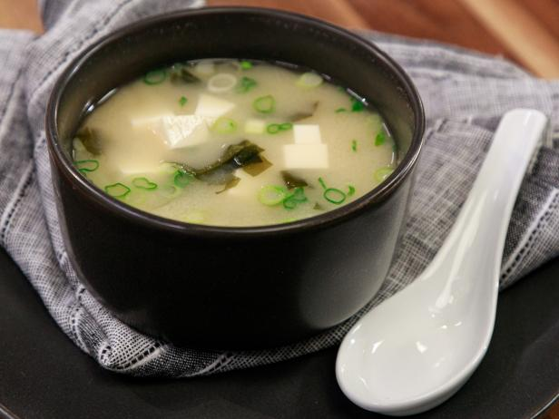

Miso Soup

Description
This recipe is great for a light winter meal. I usually make it when I've been eating like shit and need a fresh start. It's savory and salty, it has some protein, and you can add as many greens and veggies as you'd like. It's also a great introduction to Asian cooking, as it is relatively simple but does require some unique ingredients that you may have to get from an Asian market or online.
Ingredients
- 1 qt dashi
- 60 g miso paste
- 8 oz shiitake mushrooms
- 1 block of tofu
- 1 bunch of green onions
- olive oil
Dashi Ingredients
- 950 ml cold water
- 10 g kombu (dried kelp)
- 12 g bonito flakes (dried tuna flakes)
Steps
- Make your dashi
- Add the kombu to the saucepan of cold water. Let it sit for 20 minutes.
- Heat the stock to 170 degrees. It should be just below a simmer at this temperature.
- Turn the heat to low and add the bonito flakes. Heat the dashi for fifteen minutes
- Strain out the dashi and return to pot if using immediately or store in the fridge until ready for use
- Get your mise en place together. That means cube up your tofu, slice up your green onions and mushrooms (removing the stems. Shittake mushroom stems don't cook well.), and get your 60 g of miso paste ready.
- Saute your mushrooms in plenty of olive oil. Feel free to season with salt and pepper, although this is unnecessary since it will be seasoned by the soup
- Heat up your dashi to a simmer (or just below. You just want it at a good soup temp)
- Add the miso paste. Ideally, you would do this by placing a fine mesh strainer in your dashi and sifting the miso paste through there. That prevents any chunks from forming.
- Add your tofu to the bottom of your bowl. Ladle in the miso soup, and then add your mushrooms and green onions.
- Eat it. Love it. Write me a thank you letter.